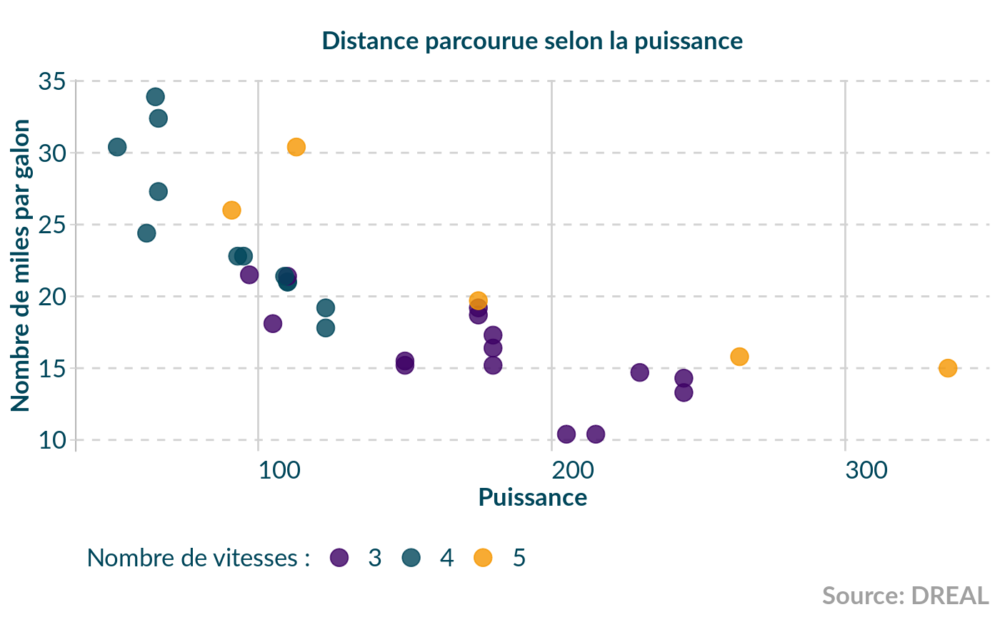
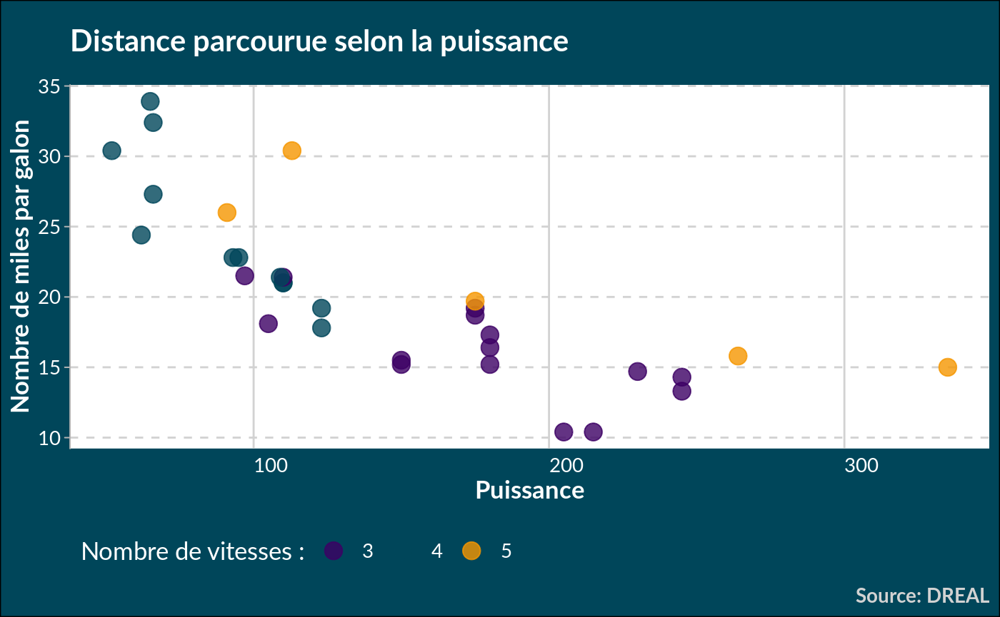
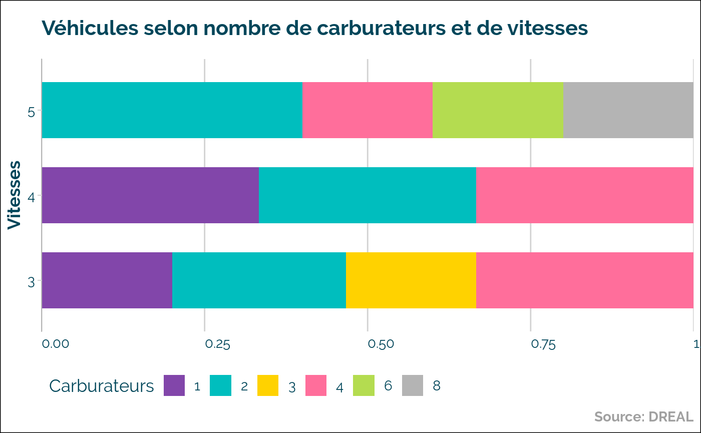
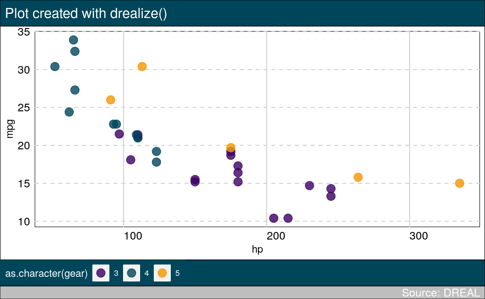

The goal of drealthemes is to propose color palettes and ggplot2 themes.
Installation
You can clone this repository and then run:
Or, you can install the released version of drealthemes from archive file if created (Please adapt version number to yours):
Examples
library(drealthemes)
library(dplyr)
library(ggplot2)
data(dreal_colors)
# show palette
tibble(
x = rep(1:3, each = 6),
y = rep(1:6, times = 3),
names = names(dreal_colors),
colors = dreal_colors) %>%
ggplot() +
aes(x, y, fill = names) +
geom_tile() +
geom_text(aes(label = names)) +
scale_fill_manual(values = dreal_colors) +
guides(fill = FALSE) +
theme_void()
Classic {ggplot2} theme
See the vignette for others possibilities.
ggplot(mtcars) +
aes(hp, mpg, colour = as.character(gear)) +
geom_point(size = 4, alpha = .8) +
scale_color_dreal_d() +
ggtitle("Distance parcourue selon la puissance") +
labs(caption = "Source: DREAL",
colour = "Nombre de vitesses :",
x = "Puissance", y = "Nombre de miles par galon") +
theme_dreal_light()
ggplot(mtcars) +
aes(hp, mpg, colour = as.character(gear)) +
geom_point(size = 4, alpha = .8) +
scale_color_dreal_d() +
ggtitle("Distance parcourue selon la puissance") +
labs(caption = "Source: DREAL",
colour = "Nombre de vitesses :",
x = "Puissance", y = "Nombre de miles par galon") +
theme_dreal_dark()
mtcars %>%
group_by(gear, carb = as.character(carb)) %>%
summarise(n = n()) %>%
ggplot() +
geom_col(aes(as.factor(gear), n, fill = carb),
position = position_fill(reverse = TRUE),
width = 0.66) +
# dreal
scale_fill_dreal_d() +
theme_dreal(flipped = TRUE, caption.position = "right") +
coord_flip() +
# additionnal tweaks
scale_y_continuous(expand = expand_scale(0, 0)) +
labs(title = "Véhicules selon nombre de carburateurs et de vitesses",
x = "Vitesses", y = NULL, fill = "Carburateurs",
caption = "Source: DREAL") +
guides(fill = guide_legend(ncol = 6))
Thème avec drealize
C’est le format le plus proche de la proposition graphique. Cependant, il ne fonctionne pas comme un theme classique. Il nécessite d’ajouter une fonction drealize() à chaque graphique à la place de l’écriture du titre.
# directly in a plot
g <- ggplot(mtcars, aes(hp, mpg, colour = as.character(gear))) +
geom_point(size = 4, alpha = .8) +
scale_color_dreal_d()
g2 <- drealize(g,
title = "Plot created with drealize()",
caption = "Source: DREAL",
legend.position = "bottom")